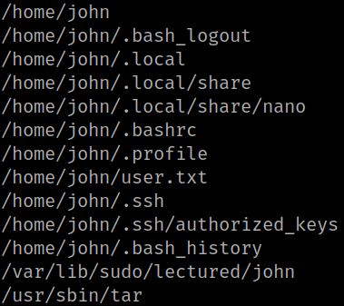
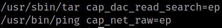

5.3 Search files belonging to user's group
User's group is 1000.
1. Run the following command on the SSH connection.
john@TheWall:~$ find / -xdev -group 1000 2>/dev/null
Output:

“/usr/sbin/tar” is the most interesting file.
2. Start scanning the file system for files with capabilities using getcap -r / The -r flag tells getcap to search recursively, ‘/‘ to indicate that we want to search the whole system.
The output is usually filled with tens or hundreds of “Operation not supported” errors, making it hard to read. We can redirect errors to /dev/null to get a cleaner output. More info here.
On your SSH connection run the following command.
john@TheWall:~$ /sbin/getcap -r / 2>/dev/null
Output:

It has the capability of reading files.